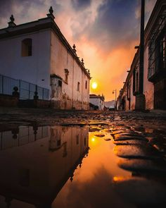
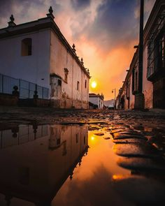
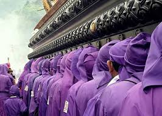

-La belleza de esta ciudad, Patrimonio Cultural de la Humanidad por la UNESCO, radica en cada uno de sus detalles.
-Los que la visitan quedan maravillados con sus atractivos históricos.
-Antiguos templos y monasterios forman parte de su riqueza.
-Fundada el 10 de marzo de 1543, La Antigua Guatemala fue declarada Patrimonio Cultural de la Humanidad por la Unesco en el año 1979.
-Esta bella y mágica ciudad colonial guarda casi quinientos años de historia, con un clima privilegiado y una excepcional vista hacia los volcanes de Fuego y Acatenango.
-Fue construida en el Valle de Panchoy y nombrada la tercera sede de la capital de Guatemala.
-En esta ciudad el tiempo se detuvo y quedó atrapado en las gruesas paredes de sus templos, sus monasterios y sus casas coloniales.
-Esta colorida población aún conserva edificaciones restauradas del siglo XVI y puede ser recorrida a pie a través de sus calles empedradas.
-Desde el Cerro de la Cruz, ubicado al nororiente de la urbe, La Antigua Guatemala se ve impresionante.
-Admirable es también el emblemático Volcán de Agua, que ha sido testigo de las glorias y caídas de la población.
-La belleza de esta ciudad radica en cada uno de sus detalles.
-Los que la visitan quedan maravillados con sus atractivos históricos, antiguos templos y monasterios que forman parte de su legado.
-Luego de haber sufrido varios terremotos, ha permanecido detenida en el tiempo y es admirada por sus calles empedradas, casas coloniales, monumentos civiles, leyendas y tradiciones.
-Los principales atractivos turísticos de la Antigua son:
-El Palacio de los Capitanes Generales.
-El Convento y Arco de Santa Catalina.
-La Plaza Mayor.
-El Museo de Jade.
-La Antigua Catedral de Guatemala.
-El museo de la Universidad de San Carlos.
-la Ruta Santa del Hermano Pedro entre otros.
-La ciudad también es rica en artesanías tales como tejidos típicos, cerámica, productos de plata y oro, cerería, productos metálicos, dulces típicos y gastronomía.
-Para llegar a La Antigua Guatemala desde la Ciudad de Guatemala debe tomar la carretera CA-1, saliendo por la Calzada Roosevelt, pasando por San Lucas Sacatepéquez y girar hacia la derecha.
-La Antigua está situada a 40 Kilómetros del centro de la ciudad capital.
| Primera lista de Imagenes | Segunda lista de Imagenes | |
Tercera lista de Imagenes |  | |
Cuarta lista de Imagenes |